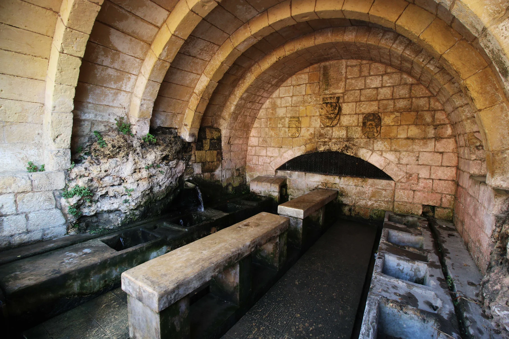

A civic and residential spine. Confirm the actual entrance, traffic, parking and pavement from the real address.

IL-FONTANA · GOZOSpring stone.
Spring stone.
Hillside streets.
Fontana's wash-house, lived village slope and valley edges belong to one compact locality, but they are not interchangeable. Victoria and Xlendi are nearby directions—not pieces of Fontana to borrow.
READ THE LOCALITY IN PARTS
A small village shaped by water and slope.
The council traces Fontana from Għajn il-Kbira up the hillside south of Victoria. That history explains the place name and urban form; it does not tell you which street surrounds a home or whether a route is level, paved or public.
A specific heritage place and wash-house—not a feature of every home and not proof of unrestricted access.
Real landscape context whose paths, gradients and seasonal conditions need a current on-site check.
Useful orientation and transport references. Each remains a separate locality with its own streets and services.
HERITAGE, NOT PROPERTY PROOF
The wash-house explains the name—not a listing.
The council, Visit Gozo and Gozo Album connect Fontana with its springs and historic communal wash-house. Treat it as a self-guided heritage reference and verify access before visiting.
Check the slope
Look at steps, pavement continuity, deliveries, parking and the actual route from the entrance rather than the locality centroid.
Respect a working place
Do not promise an encounter, activity or open access. Use the current council or tourism source before a visit.
No invented trail
A visible valley or map gap is not a public walking route. Exact endpoints and routed geometry come first.
Keep the island leg separate
A ferry or high-speed crossing concerns arrival to Gozo; it is not part of a Fontana walking line.
EVERYDAY ORIENTATION
Useful anchors, with the evidence level visible.
Council, health and public-transport sources are durable starting points. Grocery stock, business hours and departure times remain live details.
Fontana Local Council
Use the official council site for current services, notices and public-space information.
Victoria Health Centre
Primary HealthCare identifies the Victoria centre for people residing in Gozo. Check services and hours live.
Route 330 corridor
The operator lists Fontana between Victoria and Xlendi. It does not prove a nearest stop or property-specific journey time.
Confirm the shop
Current platforms list L'Epicerie and Ta' Golina in Fontana; verify the operator, stock and hours before relying on either.
FOOD, WITHOUT RANKINGS
Two formats, two evidence levels.
These entries orient the locality. They are not endorsements or proof of current opening, menu, booking availability or walking distance from a home.
Trattoria di Fontana
The MTA register lists the restaurant on Triq tal-Għajn under RST-13493. Check current service directly before travelling.
Franka Inn
Malta Discount Card and Bookia currently place the venue in Fontana. Direct operator confirmation remains necessary before a visit.
Open the wider Fontana context only when you need it.
The map frames Fontana with Victoria, Kerċem, Munxar and Xlendi for orientation. It deliberately draws no boundary, route, distance, travel time or listing location and loads from OpenStreetMap only after your click.
Fontana Local Council · Visit Gozo · Gozo Album · Victoria Health Centre · Victoria Terminal / route 330 · L'Epicerie listing · Ta' Golina directory entry · MTA restaurant register · Franka third-party listing. Volatile details require a fresh check.
No ranking, fixed opening hours, property-specific distance, guaranteed access, parking claim, accessibility promise or locality-wide journey time is implied.